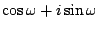
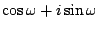

Starting with the three filter types shown above, which all have real-valued
poles and zeros, we now transform them to operate on bands located off the real
axis. The low-pass, high-pass, and shelving filters will then become
band-pass, stop-band, and peaking filters. First we develop the band-pass
filter. Suppose we want a center frequency at  radians and a
bandwidth of
radians and a
bandwidth of  . We take the low-pass filter with cutoff frequency
. We take the low-pass filter with cutoff frequency
 ; its pole is located, for small values of
; its pole is located, for small values of  , roughly at
, roughly at
 .
Now rotate this value by
.
Now rotate this value by  radians in the complex plane, i.e.,
multiply by the complex number
. The new pole
is at:
radians in the complex plane, i.e.,
multiply by the complex number
. The new pole
is at:
The peak is approximately (not exactly) at the desired center frequency
 , and the frequency response drops by 3 decibels approximately
, and the frequency response drops by 3 decibels approximately  radians above and below it. It is often desirable to normalize the filter to
have a peak gain near unity; this is done by multiplying the input or output by
the product of the distances of the two poles to the peak on the circle, or
(very approximately):
radians above and below it. It is often desirable to normalize the filter to
have a peak gain near unity; this is done by multiplying the input or output by
the product of the distances of the two poles to the peak on the circle, or
(very approximately):